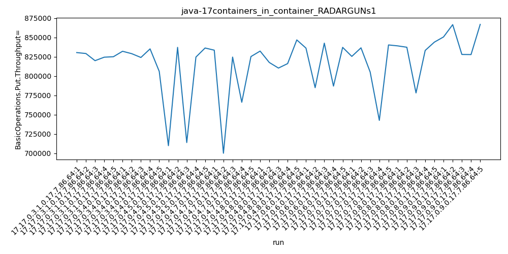
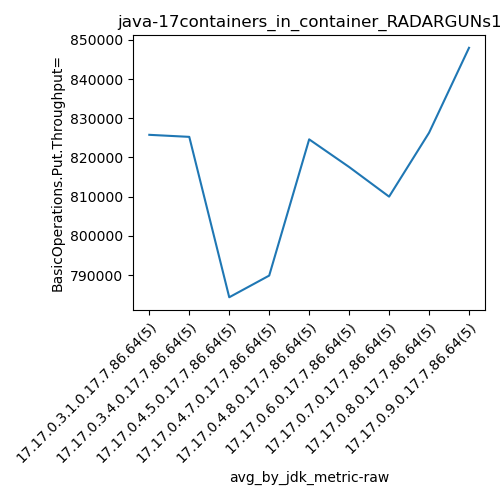
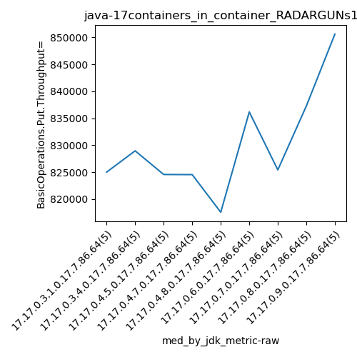

java-17 RADARGUNs1
Context at bottom
/home/jvanek/git/benchmarks-in-nested-virtualisation-toolchain/final_results/containers_in_container_results/containers_in_container_DACAPO
java-17
RADARGUNs1
/home/jvanek/git/benchmarks-in-nested-virtualisation-toolchain/final_results/containers_in_container_results/containers_in_container_JMH
java-17
RADARGUNs1
/home/jvanek/git/benchmarks-in-nested-virtualisation-toolchain/final_results/containers_in_container_results/containers_in_container_SPECJBB
java-17
RADARGUNs1
/home/jvanek/git/benchmarks-in-nested-virtualisation-toolchain/final_results/containers_in_container_results/containers_in_container_RADARGUNs1
java-17
RADARGUNs1
containers_in_container_RADARGUNs1
- containers_in_container_RADARGUNs1 - throughput get
- containers_in_container_RADARGUNs1 - throughput put
- containers_in_container_RADARGUNs1 - response mean time get
- containers_in_container_RADARGUNs1 - response mean time put
containers_in_container_RADARGUNs1 - throughput get
Expected number of java-17 JDKs: 9
1st avgmed_alljdks_metric:
/home/jvanek/git/benchmarks-in-nested-virtualisation-toolchain/final_results/result_processing.py /home/jvanek/git/benchmarks-in-nested-virtualisation-toolchain/final_results/containers_in_container_results/containers_in_container_RADARGUNs1 BasicOperations.Get.Throughput= False
values: [3321413, 3316792, 3279597, 3297480, 3300037, 3328081, 3315766, 3295772, 3340809, 3224164, 2839375, 3348385, 2855813, 3298351, 3345367, 3333968, 2800306, 3298288, 3064129, 3300668, 3329259, 3270228, 3241356, 3264744, 3386946, 3344675, 3139929, 3370615, 3147670, 3348721, 3301732, 3345834, 3220949, 2970360, 3361082, 3356039, 3348959, 3112410, 3332438, 3375563, 3402524, 3466014, 3311536, 3311308, 3467426]

Expected number of iterations: 5
final number of values: 45 out of 45
Pass rate: 100.0%
values: (2800306, 3467426, 3267397.288888889, 3311536)

** accuracy from all jdks and runs
more is better
MIN: 2800306
MAX: 3467426
AVG: 3267397.288888889
MED: 3311536
Relative differences 1:
MIN-MAX: 19.0 %
MIN-AVG: 14.0 %
MIN-MED: 15.0 %
MAX-MIN: -24.0 %
MAX-AVG: -6.0 %
MAX-MED: -5.0 %
AVG-MED: 1.0 %
stored to java-17.properties. sort | uniq that!
2nd avgmed_by_jdk_metric:
values: [3303063.8, 3300918.4, 3137458.2, 3159471.8, 3298506.6, 3270322.0, 3239991.4, 3305081.8, 3391761.6]
values: [3300037, 3315766, 3298351, 3298288, 3270228, 3344675, 3301732, 3348959, 3402524]

values: (3137458.2, 3391761.6, 3267397.288888889, 3298506.6)
values: (3270228, 3402524, 3320062.222222222, 3301732)

** accuracy from all jdks where runs were avged
more is better
MIN: 3137458.2
MAX: 3391761.6
AVG: 3267397.288888889
MED: 3298506.6
Relative differences 1:
MIN-MAX: 7.0 %
MIN-AVG: 4.0 %
MIN-MED: 5.0 %
MAX-MIN: -8.0 %
MAX-AVG: -4.0 %
MAX-MED: -3.0 %
AVG-MED: 1.0 %
stored to java-17.properties. sort | uniq that!
** accuracy from all jdks where runs were medianed
more is better
MIN: 3270228
MAX: 3402524
AVG: 3320062.222222222
MED: 3301732
Relative differences 1:
MIN-MAX: 4.0 %
MIN-AVG: 2.0 %
MIN-MED: 1.0 %
MAX-MIN: -4.0 %
MAX-AVG: -2.0 %
MAX-MED: -3.0 %
AVG-MED: -1.0 %
stored to java-17.properties. sort | uniq that!
containers_in_container_RADARGUNs1 - throughput put
Expected number of java-17 JDKs: 9
1st avgmed_alljdks_metric:
/home/jvanek/git/benchmarks-in-nested-virtualisation-toolchain/final_results/result_processing.py /home/jvanek/git/benchmarks-in-nested-virtualisation-toolchain/final_results/containers_in_container_results/containers_in_container_RADARGUNs1 BasicOperations.Put.Throughput= False
values: [830377, 829171, 819896, 824404, 825010, 832074, 828964, 824045, 835157, 806018, 709835, 837121, 713896, 824573, 836296, 833490, 700055, 824550, 766058, 825220, 832306, 817566, 810332, 816107, 846769, 836182, 784937, 842616, 786957, 837132, 825429, 836519, 805216, 742609, 840271, 839059, 837280, 778131, 833137, 843887, 850620, 866566, 827955, 827799, 866880]

Expected number of iterations: 5
final number of values: 45 out of 45
Pass rate: 100.0%
values: (700055, 866880, 816854.9333333333, 827955)

** accuracy from all jdks and runs
more is better
MIN: 700055
MAX: 866880
AVG: 816854.9333333333
MED: 827955
Relative differences 1:
MIN-MAX: 19.0 %
MIN-AVG: 14.0 %
MIN-MED: 15.0 %
MAX-MIN: -24.0 %
MAX-AVG: -6.0 %
MAX-MED: -5.0 %
AVG-MED: 1.0 %
stored to java-17.properties. sort | uniq that!
2nd avgmed_by_jdk_metric:
values: [825771.6, 825251.6, 784344.2, 789874.6, 824616.0, 817564.8, 810008.8, 826298.8, 847964.0]

values: [825010, 828964, 824573, 824550, 817566, 836182, 825429, 837280, 850620]

values: (784344.2, 847964.0, 816854.9333333333, 824616.0)
values: (817566, 850620, 830019.3333333334, 825429)

** accuracy from all jdks where runs were avged
more is better
MIN: 784344.2
MAX: 847964.0
AVG: 816854.9333333333
MED: 824616.0
Relative differences 1:
MIN-MAX: 8.0 %
MIN-AVG: 4.0 %
MIN-MED: 5.0 %
MAX-MIN: -8.0 %
MAX-AVG: -4.0 %
MAX-MED: -3.0 %
AVG-MED: 1.0 %
stored to java-17.properties. sort | uniq that!
** accuracy from all jdks where runs were medianed
more is better
MIN: 817566
MAX: 850620
AVG: 830019.3333333334
MED: 825429
Relative differences 1:
MIN-MAX: 4.0 %
MIN-AVG: 2.0 %
MIN-MED: 1.0 %
MAX-MIN: -4.0 %
MAX-AVG: -2.0 %
MAX-MED: -3.0 %
AVG-MED: -1.0 %
stored to java-17.properties. sort | uniq that!
containers_in_container_RADARGUNs1 - response mean time get
Expected number of java-17 JDKs: 9
1st avgmed_alljdks_metric:
/home/jvanek/git/benchmarks-in-nested-virtualisation-toolchain/final_results/result_processing.py /home/jvanek/git/benchmarks-in-nested-virtualisation-toolchain/final_results/containers_in_container_results/containers_in_container_RADARGUNs1 BasicOperations.Get.ResponseTimeMean True
values: [1049, 1093, 1144, 1146, 1059, 1074, 1074, 1081, 1086, 1154, 1089, 1078, 1080, 1085, 1082, 1078, 1081, 1086, 1081, 1074, 1090, 1095, 1169, 1127, 1049, 1035, 1071, 1041, 1058, 1055, 1090, 1071, 1058, 1062, 1060, 1069, 1059, 1072, 1093, 1051, 1011, 996, 1034, 1022, 1016]

Expected number of iterations: 5
final number of values: 45 out of 45
Pass rate: 100.0%
values: (996, 1169, 1073.9555555555555, 1074)

** accuracy from all jdks and runs
more is worse
MIN: 1169
MAX: 996
AVG: 1073.9555555555555
MED: 1074
Relative differences 1:
MIN-MAX: 17.0 %
MIN-AVG: 9.0 %
MIN-MED: 9.0 %
MAX-MIN: -15.0 %
MAX-AVG: -7.0 %
MAX-MED: -7.0 %
AVG-MED: -0.0 %
stored to java-17.properties. sort | uniq that!
2nd avgmed_by_jdk_metric:
values: [1098.2, 1093.8, 1082.8, 1080.0, 1106.0, 1052.0, 1068.2, 1068.8, 1015.8]

values: [1093, 1081, 1082, 1081, 1095, 1055, 1062, 1069, 1016]

values: (1015.8, 1106.0, 1073.9555555555555, 1080.0)
values: (1016, 1095, 1070.4444444444443, 1081)

** accuracy from all jdks where runs were avged
more is worse
MIN: 1106.0
MAX: 1015.8
AVG: 1073.9555555555555
MED: 1080.0
Relative differences 1:
MIN-MAX: 9.0 %
MIN-AVG: 3.0 %
MIN-MED: 2.0 %
MAX-MIN: -8.0 %
MAX-AVG: -5.0 %
MAX-MED: -6.0 %
AVG-MED: -1.0 %
stored to java-17.properties. sort | uniq that!
** accuracy from all jdks where runs were medianed
more is worse
MIN: 1095
MAX: 1016
AVG: 1070.4444444444443
MED: 1081
Relative differences 1:
MIN-MAX: 8.0 %
MIN-AVG: 2.0 %
MIN-MED: 1.0 %
MAX-MIN: -7.0 %
MAX-AVG: -5.0 %
MAX-MED: -6.0 %
AVG-MED: -1.0 %
stored to java-17.properties. sort | uniq that!
containers_in_container_RADARGUNs1 - response mean time put
Expected number of java-17 JDKs: 9
1st avgmed_alljdks_metric:
/home/jvanek/git/benchmarks-in-nested-virtualisation-toolchain/final_results/result_processing.py /home/jvanek/git/benchmarks-in-nested-virtualisation-toolchain/final_results/containers_in_container_results/containers_in_container_RADARGUNs1 BasicOperations.Put.ResponseTimeMean True
values: [3878, 3796, 3805, 3743, 3857, 3799, 3788, 3737, 3811, 3826, 3849, 3811, 3708, 3987, 3771, 3724, 3742, 3895, 3713, 3787, 3776, 3926, 3825, 3717, 3803, 3763, 3713, 3740, 3822, 3737, 3791, 3723, 3835, 3881, 3800, 3827, 3676, 3880, 3811, 3820, 3655, 3678, 3680, 3555, 3620]

Expected number of iterations: 5
final number of values: 45 out of 45
Pass rate: 100.0%
values: (3555, 3987, 3779.5777777777776, 3791)

** accuracy from all jdks and runs
more is worse
MIN: 3987
MAX: 3555
AVG: 3779.5777777777776
MED: 3791
Relative differences 1:
MIN-MAX: 12.0 %
MIN-AVG: 5.0 %
MIN-MED: 5.0 %
MAX-MIN: -11.0 %
MAX-AVG: -6.0 %
MAX-MED: -6.0 %
AVG-MED: -0.0 %
stored to java-17.properties. sort | uniq that!
2nd avgmed_by_jdk_metric:
values: [3815.8, 3792.2, 3825.2, 3772.2, 3809.4, 3755.0, 3806.0, 3802.8, 3637.6]

values: [3805, 3799, 3811, 3742, 3803, 3740, 3800, 3820, 3655]

values: (3637.6, 3825.2, 3779.5777777777776, 3802.8)
values: (3655, 3820, 3775.0, 3800)
** accuracy from all jdks where runs were avged
more is worse
MIN: 3825.2
MAX: 3637.6
AVG: 3779.5777777777776
MED: 3802.8
Relative differences 1:
MIN-MAX: 5.0 %
MIN-AVG: 1.0 %
MIN-MED: 1.0 %
MAX-MIN: -5.0 %
MAX-AVG: -4.0 %
MAX-MED: -4.0 %
AVG-MED: -1.0 %
stored to java-17.properties. sort | uniq that!
** accuracy from all jdks where runs were medianed
more is worse
MIN: 3820
MAX: 3655
AVG: 3775.0
MED: 3800
Relative differences 1:
MIN-MAX: 5.0 %
MIN-AVG: 1.0 %
MIN-MED: 1.0 %
MAX-MIN: -4.0 %
MAX-AVG: -3.0 %
MAX-MED: -4.0 %
AVG-MED: -1.0 %
stored to java-17.properties. sort | uniq that!
/home/jvanek/git/benchmarks-in-nested-virtualisation-toolchain/final_results/containers_in_container_results/containers_in_container_J2DBENCH
java-17
RADARGUNs1
/home/jvanek/git/benchmarks-in-nested-virtualisation-toolchain/final_results/containers_in_container_results/containers_in_container_RADARGUNs3
java-17
RADARGUNs1
pass rates:
containers_in_container_RADARGUNs1=100.0%
Context:
- containers_in_container_results
- RADARGUNs1